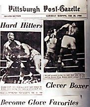
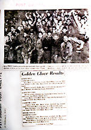
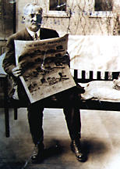
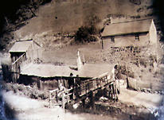
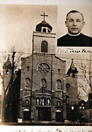
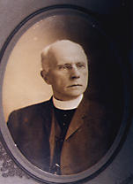
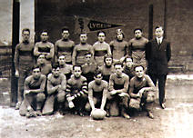
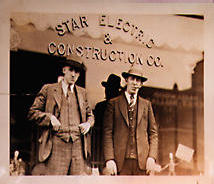

Hazelwood Historical Photographs
Glen Hazel, Boys Club Fights | Golden
Glove Results | Man with paper | Old farm in Schenley Park | Saint
Ann's Church | Saint Stephen's Friar Devlin
| Saint Stephen's Lyceum Football Team |Second Avenue, Star Electric & Construction Company

Glen Hazel, Boys Club Fights, 1955
Back to top

Golden Glove Results, Crowd scene
Back to top

Man with paper
Back to top

Old farm in Schenley Park
Back to top

Saint Ann's Church
Back to top

Saint Stephen's Friar Devlin
Back to top

Saint Stephen's Lyceum Football Team
Back to top

Second Avenue, Star Electric & Construction Company
Back to top